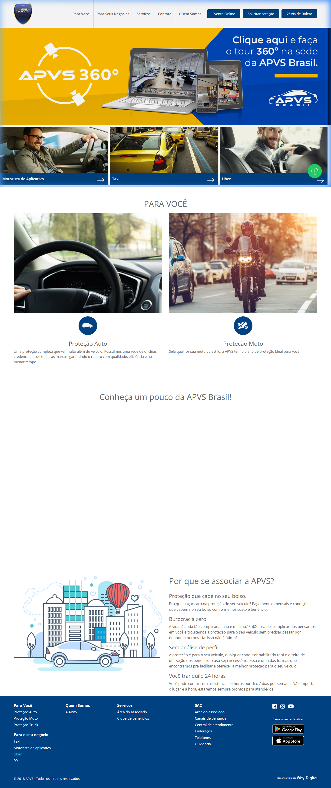
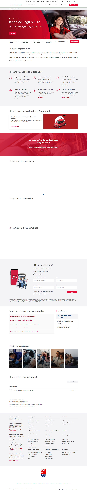
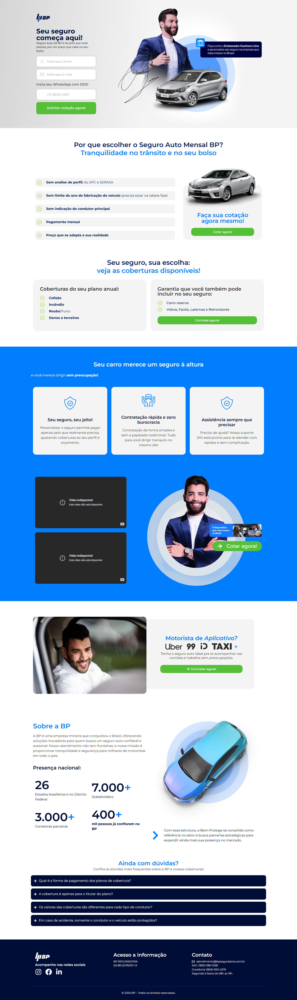
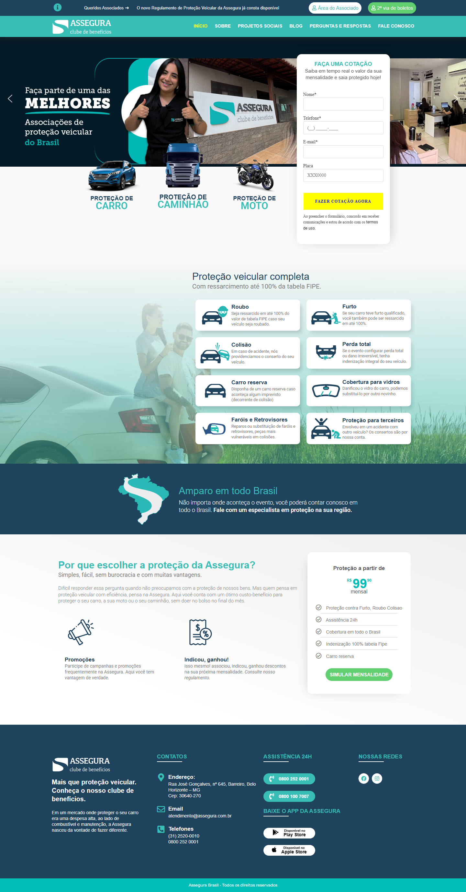

Análise Competitiva APVS Brasil v2.0
Diagnóstico completo do cenário competitivo e recomendações estratégicas de CRO para 2026.
Metodologia e Critérios
Como os dados foram coletados e quais critérios foram aplicados na comparação.
Análise Heurística
Inspeção visual das home pages e sites de cada player, avaliando estrutura, hierarquia, CTA e prova social.
5 Dimensões Avaliadas
Proposta de valor, CTA principal, prova social, atrito de entrada e oportunidade de diferenciação.
Público-alvo
Foco no segmento C/D/E, motoristas de app, frotistas e consumidores rejeitados pelo seguro tradicional.
Lens Mobile-first
Todos os sites foram avaliados com prioridade para a experiência mobile, dado que +80% dos acessos da APVS são via celular.
Tipo de Análise
Análise qualitativa heurística com dados públicos disponíveis. Não inclui dados de Analytics dos concorrentes.
Data de Captura
Março de 2026. Imagens e observações baseadas nas versões ativas dos sites na data de análise.
Diagnóstico Interno — APVS
Dados de tráfego (Google Analytics)
Isso confirma que o site atrai tráfego, mas não converte. Mais de 80% dos acessos são mobile e o perfil predominante é de usuários jovens, da classe C/D, muitos motoristas de aplicativo — público que busca rapidez, clareza e ausência de burocracia.
Problemas críticos do site atual
Faltam: prova social com números reais (indenizações pagas, associados ativos, assistências), CTA forte e específico, depoimentos reais com foto e diferencial claro vs. seguro tradicional.
Forças e Provas Sociais (Social Proof)
Campanhas de social media com +7 milhões de visualizações (reel da lei sancionada) provam que o conteúdo sobre regulamentação gera engajamento massivo — esse ativo precisa entrar no site como argumento de confiança.
O ecossistema digital da APVS já produz resultados massivos que precisam ser transpostos para o site como argumentos de autoridade.
Análise dos Players
9 players avaliados em: proposta de valor, CTA, diferenciais, prova social, atritos e oportunidades para a APVS.
1. APVS Brasil (Análise Interna)
A maior associação de proteção veicular do país — rede física massiva + burocracia zero.

Objetivos Atuais do Site: Captação de leads, proteção de marca, emissão de 2ª via e abertura de eventos.
Tom de Voz (Arquétipo): Comercial direto, Popular/Acessível e Tranquilizador (Provedor/Amigo que resolve).
Diferenciais Declarados
- Sem Serasa / Sem análise de perfil
- LPs para Uber, 99, Taxi
- Modelo híbrido físico+digital
- Rede nacional 24h
Prova Social Atual
- Tour 360° na sede
- Menção implícita à liderança
- Sem números visíveis no site
2. Loovi
Insurtech digital que combina tecnologia de ponta com um apelo mediático extremamente agressivo.

Diferenciais
- Cotação 100% online (30s)
- Ativação em 5 minutos
- App-first
- Sem vistoria presencial
Prova Social
- Neymar Jr como embaixador
- +100 mil clientes ativos
- Avaliações App Store
3. Bradesco Seguros
Modelo bancário tradicional, focando em recompensas tangíveis imediatas como alavanca de aquisição.

Diferenciais
- Ecossistema Livelo
- Cashback imediato
- Autoridade de marca bancária
4. Universo AGV
Foco em proximidade e prova social humanizada através de associados reais em todo o território nacional.

Prova Social
- Fotos reais de associados
- Profissão + localidade nos depoimentos
- Selo de "Pessoas ajudando pessoas"
5. Porto Seguro
Ecossistema financeiro completo — seguro como porta de entrada para banco, cartão e serviços.

6. Bem Protege
Líderpopular — endosso sertanejo + remoção de barreiras de crédito para classe C/D.

Diferenciais
- Sem SPC / Sem Serasa
- Embaixador Gusttavo Lima
- +400 mil protegidos
7. Star Proteção Veicular
Transparência operacional com dados reais de indenizações + selo Google 4.9★.

8. Assegura Brasil
Ancoragem de preço sub-100 + MGM (member-get-member) como alavanca de crescimento.

9. Tokio Marine
Rigor japonês + modularidade — simulação em tempo real com ajuste de cobertura e preço.

Matriz de Benchmark — Matriz Comparativa
Capacidades digitais e diferenciais estratégicos dos 9 players, com destaque para gaps da APVS.
| Player | Modelo | Cotação Online | App Móvel | Clube / Programa | Prova Social | Embaixador | CTA Força |
|---|---|---|---|---|---|---|---|
| APVS Brasil ⭐ | Assoc. Veicular | ⚡ Parcial (Tour) | ✔ Sim | ✗ Não visível | ⚡ Fraca (sem nºs) | ✗ Não | ⚡ Médio |
| Loovi | Insurtech | ✔ 100% (30s) | ✔ Sim | ✗ Não | ✔ Forte (+100k) | ✔ Neymar Jr | ✔ Alto |
| Bem Protege | Insurtech | ✔ Sim | ✔ Sim | ✗ Não | ✔ 400k protegidos | ✔ Gusttavo Lima | ✔ Alto |
| Universo AGV | Assoc. Veicular | ⚡ Via Form | ✔ Sim | ✔ Portal Benefícios | ✔ Fotos reais | ✗ Não | ⚡ Médio |
| Star Proteção | Assoc. Veicular | ⚡ Via Form | ✔ Sim | ✔ Clube Star | ✔ 4.9★ Google | ✗ Não | ✔ Alto |
| Assegura Brasil | Assoc. Veicular | ⚡ Formulário | ✔ Sim | ✔ Indicou, Ganhou | ⚡ Média (+10 anos) | ✗ Não | ✔ Direto |
| Porto Seguro | Seguradora | ✔ Sim | ✔ App Porto | ✔ PortoPlus | ⚡ Institucional | ✗ Não | ⚡ Médio |
| Bradesco Seguros | Seguradora | ✔ Sim | ✔ Sim | ✔ Clube + Livelo | ⚡ Prêmios setor | ✗ Não | ✗ Passivo |
| Tokio Marine | Seguradora | ✔ Tempo real | ✔ Sim | ✗ Não | ⚡ Selos qualidade | ✗ Não | ⚡ Médio |
Matriz completa de capacidades digitais. ⚡ Parcial · ✔ Forte · ✗ Ausente
Mapa de Lacunas — APVS vs Mercado
O que a APVS tem mas não comunica bem, o que usa mas precisa melhorar, e o que ainda não tem.
Prova social com números
A APVS tem 270k associados, 14 anos de mercado e dados de indenizações — mas nada disso aparece de forma destacada no site atual.
Cotação rápida online
Concorrentes como Loovi e Assegura já oferecem cotação em segundos. A APVS depende de tour ou redirecionamento para WhatsApp sem clareza de etapas.
CTA principal único
O header atual tem múltiplos CTAs competindo (Tour 360°, Cotação, 2ª via de boleto). Um CTA claro, específico e com benefício embutido é ausente.
Regulamentação como argumento
A Lei LC 213/2025 é o maior diferencial de confiança do setor associativo. A APVS não usa isso como selo de autoridade no site.
Experiência mobile otimizada
Com +80% de acessos mobile, a experiência precisa ser mobile-first: tap targets adequados, formulário em etapas, hero otimizado para telas pequenas.
Programa de indicação visível
Assegura e outros players já comunicam MGM. A APVS pode criar ou tornar visível um programa de "Indicou, Ganhou" para reduzir CAC.
💡 Insights e Oportunidades Estratégicas
Consolidado de alavancas críticas para o redesign, priorizando a inteligência de mercado e autoridade digital.
Cotação automática
75% da concorrência já oferece simuladores. Automatizar o primeiro passo reduz evasão de funil e demonstra tecnologia.
CRO · FunilProva social transparente
Transformar a sede física e os dados operacionais em números reais visíveis dissolve a principal objeção: "como sei que vão pagar?"
Confiança · ConversãoEstratégia app-first
Consolidar o aplicativo como centro da experiência de associado garante retenção de longo prazo e reduz churn.
Produto · RetençãoViralidade e CAC
Programas de indicação gamificados reduzem custo de aquisição e aumentam LTV. Base de 270k associados é um ativo de crescimento subutilizado.
Crescimento · LTVAutoridade por regulamentação
A Lei LC 213/2025 é o argumento de confiança mais poderoso do setor em 2026. APVS deve usar como "selo" em todos os pontos de contato.
Confiança · DiferencialHiper-segmentação
LPs dedicadas por perfil (Uber, 99, Taxi, Frotista) falam direto com a dor do tempo de parada — a maior objeção desse público.
Conversão · SegmentaçãoProposta de Valor e Headline
Headlines que focam em benefícios diretos ("Sem Burocracia", "Sem Serasa") têm performance superior a mensagens institucionais genéricas.
UX Writing↑ ConversãoFoco Único na Dobra 1
A redução de ruído (remover 2ª via de boleto/tour 360°) e o uso de um CTA único ("Simular Proteção") eliminam a paralisia de decisão.
UI / CRO↑ CTRDepoimentos Humanizados
Casos reais com foto, profissão e localidade ("João, Uber, SP") geram muito mais credibilidade do que blocos de texto sem rosto.
UI / Content↑ CredibilidadeComparativo vs. Seguro
Expor visualmente as vantagens da APVS versus o seguro tradicional resolve a dúvida número 1 do público qualificado.
Segmentação↑ Entendimento📖 Glossário Estratégico
Conversion Rate Optimization — elevar a eficiência em transformar visitantes em clientes.
Elemento visual ou técnico que confunde ou impede o usuário de avançar.
Call to Action — chamada projetada para incentivar uma ação imediata.
Member Get Member — programa em que associados trazem novos membros.
Lifetime Value (valor vitalício) vs Custo de Aquisição de Cliente.